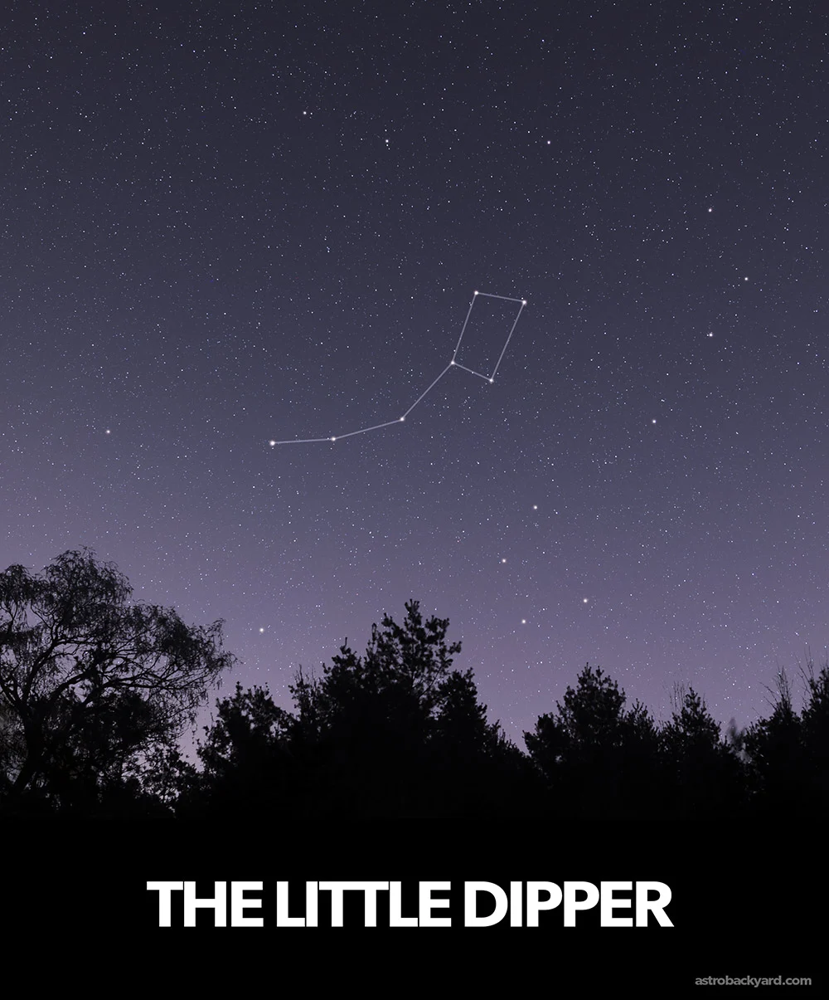
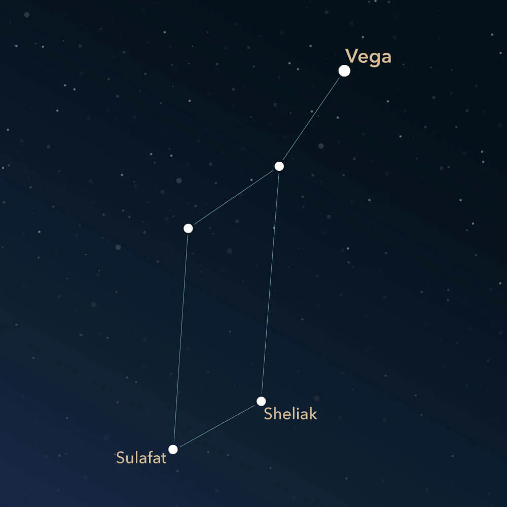
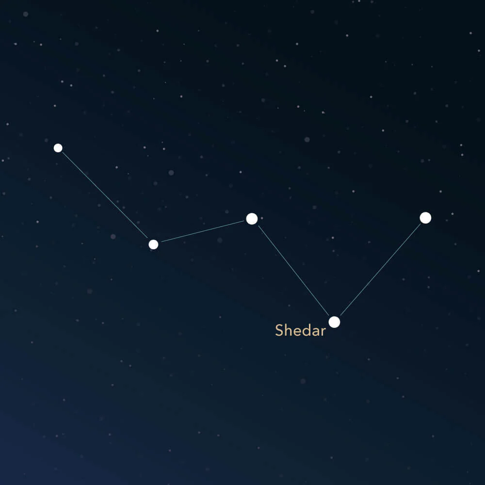
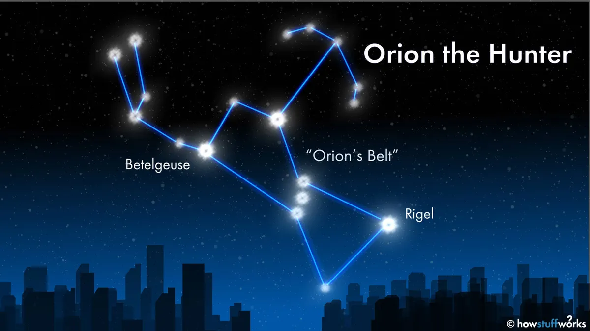

Big dipper/Ursa Major - In Greek mythology, Callisto was a nymph who caught the eye of Zeus. Hera, Zeus’s wife, became jealous and turned Callisto into a bear. Later, to protect her from being hunted, Zeus placed Callisto in the sky as a constellation. This bear became Ursa Major, the Great Bear, which we now see as the Big Dipper.
Little dipper - In Greek mythology, Arcas was the son of Callisto. One day, he almost hunted his mother, who had been turned into a bear by Hera. To protect them both, Zeus placed Arcas in the sky as a constellation. He became Ursa Minor, the Little Bear, with the North Star (Polaris) marking the tip of its handle.
Lyra - In Greek mythology, Lyra represents the lyre (a small harp) of Orpheus, the legendary musician. Orpheus played music so beautiful that it could charm animals, trees, and even rivers. After his death, Zeus placed his lyre in the sky as the constellation Lyra, so its music could shine among the stars forever.
Cassiopeia - In Greek mythology, Cassiopeia was a queen who boasted that she and her daughter were more beautiful than the sea nymphs, the Nereids. Angered by her pride, the gods punished her by placing her in the sky as a constellation. Cassiopeia is often shown sitting in her throne, sometimes upside down, as a reminder of her vanity.
Orion - In Greek mythology, Orion was a great hunter loved by the goddess Artemis. He was known for his strength and skill, but his pride led to his death—some stories say he was killed by a giant scorpion sent by Gaia. To honor him, Zeus placed Orion in the sky as a constellation, often shown with his belt and sword, facing the scorpion constellation, Scorpius.